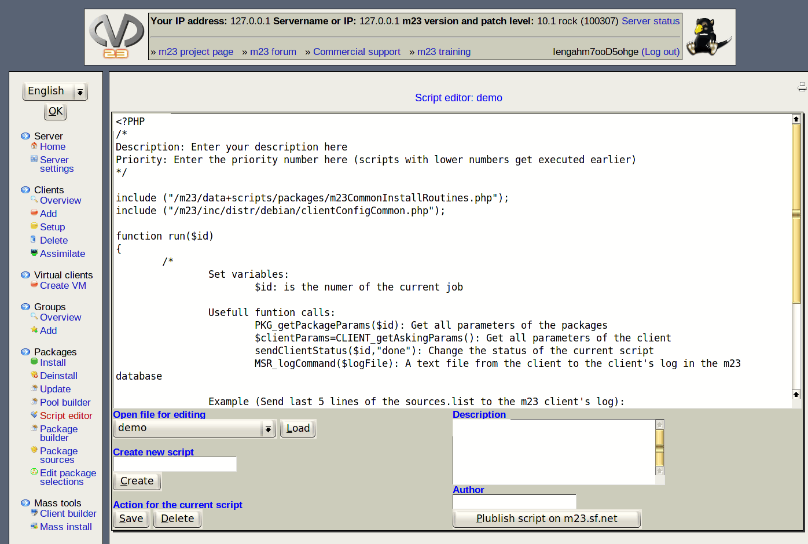

With scripts the execution of recurrent jobs is as easy as the installation of a package. The editor helps you to create your own scripts and offers the complete functional range of m23 to generate the client-side execu BASH code. You can use any BASH command and all command line utilities installed on the clients. An overview of all m23 commands can be found in the ''Development Guide'' that is linked in the menu on the left side.
- Open an existing script: Choose the script from the list under ''Manage scripts'' and click on ''Load''. The source code will be shown in the editor window.
- Save and delete scripts: Click on ''Save'' or ''Delete'' for the desired action. The action applies to the currently loaded script.
- Save script under a different name: If you would like to save the script in the editor under a new name, please enter this name at ''Save as'' and then, click on ''Save''.
- Create a new script: Enter the name for the new script at ''Create new script'' and confirm with a click on ''Create''. A short example script you can edit will be loaded into the editor window.
-
- Download scripts from other m23 users: You can load scripts published by other m23 users directly into the editor. For this, update the list of available scripts by clicking on ''Update online list of scripts''. Then select the script you would like to use from the list by clicking on ''Download scripts'' and load it into the editor with a click on ''Load''
- Share your scripts with other m23 users: The editor contains an easy function to share your scripts with other m23 users and to open it for a bigger audience. All scripts are published on the m23 web page in the category ''Scripts of m23 users''. Please enter a short text about the purpose of your script under ''Description'' to upload it. Then add your identification code, your name or another word for identification of your script at ''Author''. To finally upload the script click on ''Publish script on m23.sf.net''. Your script will be uploaded to the m23 website immediately.
- Examine script output: As a first test for your script, you can check its output, in order to correct syntax errors, for example. For this, the script will temporarily be assigned to a client, and the BASH-Code that was generated to fit that client will be displayed in a window. Select the client from the list ''Client name'' below ''View output of script'' and then click on ''Open script output viewer''.
Subsections
root
2018-01-09